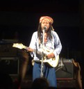

Resor · 2010-12-12 @ 16:50:37 Allmänt Permalink
Konsert
Det har varit ovanligt regnigt, lite uppfriskande och skönt oftast. De soliga dagarna är så varma.
Vad gäller turister tror jag mest det är kvinnor som saknar solen. Barnen bryr sig inte om vädret, de är snarast lättade av att inte leka i solen. Männen vill ha en öl och god mat…
Saknar vänner hemifrån ibland.
Två dagar i rad inställda turer. I morse står vi utan tak på en pir i ösregn och väntar. Beskedet blir att det är hög sjö som ökar under dagen så vi bryter och skickar hem folk till hotellen igen. Blandade känslor för både oss och gäster, men de flesta är glada att vi inte ger oss ut till varje pris. Dock en moppefärd på 5mil i hårt regn. Fast en snabbdusch och torra kläder så är livet fint igen :-)
---
Mitt klipp med mobilen:
http://www.youtube.com/watch?v=6-CDdUZQcNw
Vad gäller turister tror jag mest det är kvinnor som saknar solen. Barnen bryr sig inte om vädret, de är snarast lättade av att inte leka i solen. Männen vill ha en öl och god mat…
Saknar vänner hemifrån ibland.
Två dagar i rad inställda turer. I morse står vi utan tak på en pir i ösregn och väntar. Beskedet blir att det är hög sjö som ökar under dagen så vi bryter och skickar hem folk till hotellen igen. Blandade känslor för både oss och gäster, men de flesta är glada att vi inte ger oss ut till varje pris. Dock en moppefärd på 5mil i hårt regn. Fast en snabbdusch och torra kläder så är livet fint igen :-)
---


Lördag, mat, lära lite Thai av chaufförerna Eang och Ruun sen till Job2Do-konserten. Många där. Öl. Ösregn. Lervälling. Bandet är Thai med rötter från Koh Lanta, publiken mest Falanger. Jag gillar det! Men stannar inte hela konserten för jag vill sova.Mitt klipp med mobilen:
http://www.youtube.com/watch?v=6-CDdUZQcNw